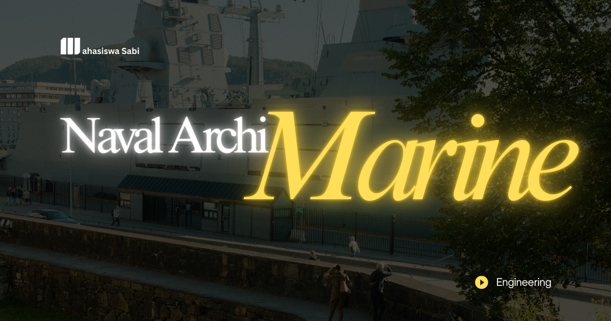

Penulisan Akademik
Bagaimana hasil penelitian tentang desain kapal, kekuatan struktur, atau efisiensi propulsi dapat disampaikan secara jelas, sistematis, dan dapat dipertanggungjawabkan? Kemampuan tersebut menjadi inti mata kuliah Penulisan Akademik dalam major studi Teknik Perkapalan. Mata kuliah ini membekali mahasiswa dengan keterampilan menyusun karya ilmiah, laporan teknis, dan dokumentasi penelitian menggunakan bahasa yang tepat, data yang valid, serta argumentasi berbasis bukti.
Penulisan Akademik merupakan mata kuliah yang mempelajari prinsip, metode, dan teknik penyusunan tulisan ilmiah sesuai kaidah akademik. Dalam Teknik Perkapalan, penulisan akademik digunakan untuk menyampaikan hasil kajian mengenai hidrodinamika, konstruksi kapal, sistem permesinan, teknologi produksi, keselamatan pelayaran, dan berbagai bidang rekayasa maritim lainnya.
Mahasiswa mempelajari cara mengembangkan gagasan, menyusun struktur tulisan, mengolah informasi dari sumber terpercaya, serta menyajikan hasil analisis secara objektif. Penekanan diberikan pada kejelasan bahasa, ketepatan istilah teknis, konsistensi argumentasi, dan kepatuhan terhadap etika ilmiah.
Penulisan Akademik membantu mahasiswa mengomunikasikan pengetahuan teknis yang diperoleh dari mata kuliah seperti Teori Bangunan Kapal, Hidrodinamika, Konstruksi Kapal, dan Teknologi Produksi. Kemampuan menulis diperlukan agar hasil perhitungan, eksperimen, maupun simulasi dapat dijelaskan secara sistematis dan dipahami oleh pembaca.
Mata kuliah ini juga menjadi bekal penting dalam penyusunan laporan kerja praktik, proposal penelitian, seminar, dan skripsi. Mahasiswa dilatih untuk tidak hanya menghasilkan analisis yang benar secara teknis, tetapi juga mampu menjelaskan metode, keterbatasan penelitian, serta alasan di balik kesimpulan yang dihasilkan.
Dalam masyarakat, kemampuan penulisan akademik mendukung penyebaran informasi ilmiah mengenai keselamatan kapal, efisiensi transportasi laut, teknologi maritim, dan perlindungan lingkungan. Informasi yang disampaikan secara jelas membantu masyarakat maupun pemangku kepentingan memahami persoalan teknis dan alternatif penyelesaiannya.
Dalam penelitian, penulisan akademik digunakan untuk menyusun proposal, laporan eksperimen, artikel jurnal, dan publikasi ilmiah. Dokumentasi yang baik memungkinkan hasil penelitian dievaluasi, dibandingkan, dan dikembangkan oleh peneliti lain.
Dalam dunia kerja, keterampilan ini relevan bagi naval architect, ship design engineer, marine surveyor, production engineer, konsultan teknik, dan peneliti maritim. Mereka membutuhkan kemampuan menyusun laporan inspeksi, spesifikasi teknis, evaluasi desain, dokumentasi proyek, serta rekomendasi rekayasa secara profesional.
1. Pemanfaatan kecerdasan buatan. AI generatif semakin digunakan untuk membantu penyusunan kerangka tulisan, penyuntingan bahasa, dan pengembangan ide. Namun, mahasiswa tetap bertanggung jawab memverifikasi informasi, menjaga orisinalitas, dan mengikuti kebijakan akademik terkait penggunaannya.
2. Pengelolaan referensi digital. Perangkat manajemen referensi dan basis data ilmiah mempermudah pencarian literatur, pengorganisasian sumber, serta penyusunan sitasi yang konsisten. Keterampilan mengevaluasi kualitas sumber tetap menjadi bagian penting dalam proses tersebut.
3. Integrasi visualisasi data teknik. Hasil Computational Fluid Dynamics (CFD), Finite Element Analysis (FEA), dan pemodelan tiga dimensi semakin sering disajikan dalam laporan penelitian. Penulis perlu menjelaskan metode, parameter, serta makna hasil visualisasi agar pembaca tidak salah menafsirkan data.
4. Open science dan transparansi penelitian. Praktik keterbukaan ilmiah mendorong dokumentasi metode, pengelolaan data, dan pelaporan hasil yang lebih transparan. Pendekatan ini membantu meningkatkan keterlacakan serta peluang pengembangan penelitian maritim.
5. Kolaborasi dan publikasi internasional. Perkembangan riset lintas disiplin meningkatkan kebutuhan penulisan ilmiah berbahasa Inggris dan kolaborasi digital. Mahasiswa perlu menguasai komunikasi akademik agar hasil penelitian perkapalan dapat menjangkau komunitas ilmiah yang lebih luas.
Penulisan Akademik merupakan mata kuliah penting dalam Teknik Perkapalan yang membekali mahasiswa dengan kemampuan menyusun, menjelaskan, dan mempublikasikan informasi ilmiah secara sistematis. Melalui penguasaan struktur tulisan, bahasa teknis, pengelolaan referensi, penyajian data, dan etika akademik, mahasiswa dapat menghasilkan karya yang berkualitas serta dapat dipertanggungjawabkan. Perkembangan AI, visualisasi data, dan kolaborasi penelitian digital menjadikan keterampilan ini semakin relevan bagi pendidikan, penelitian, dan dunia profesional maritim.